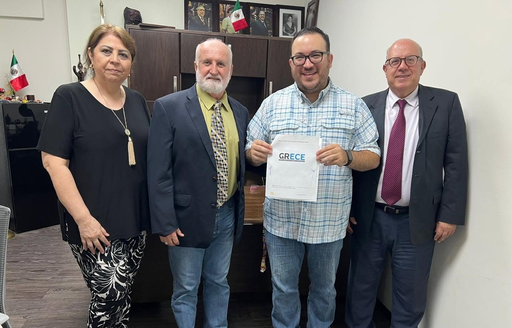
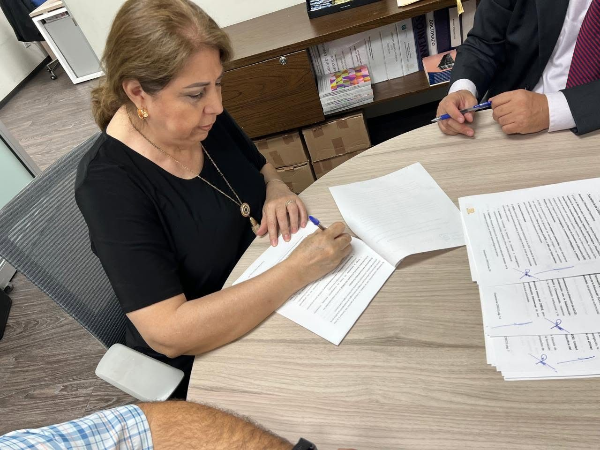
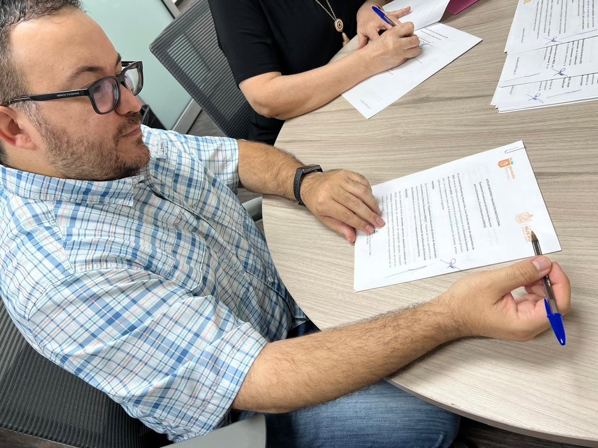
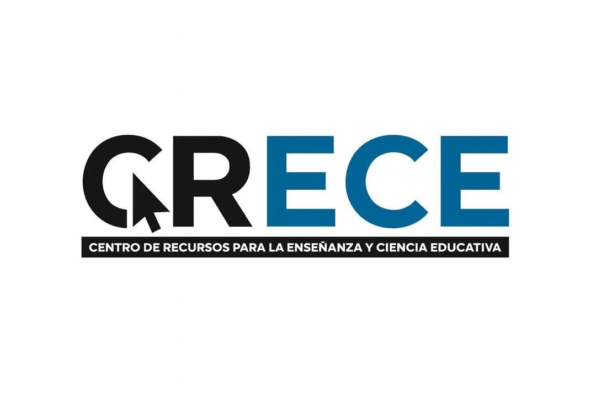
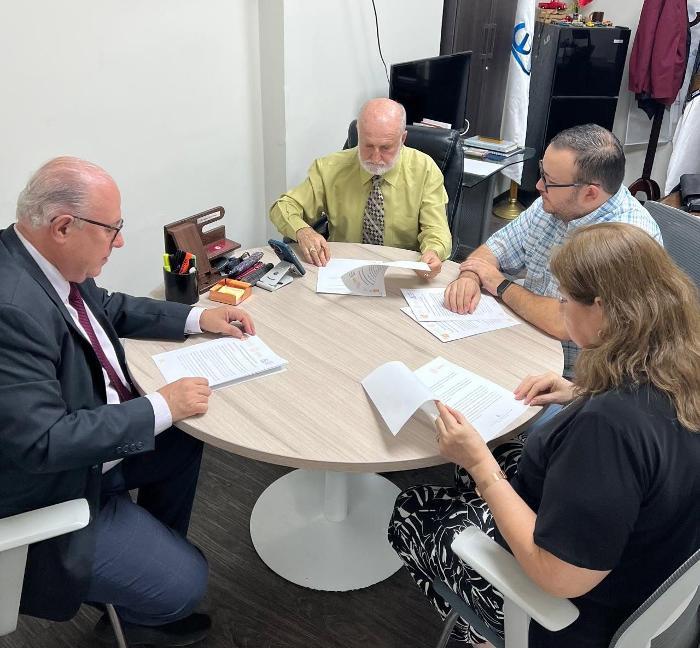
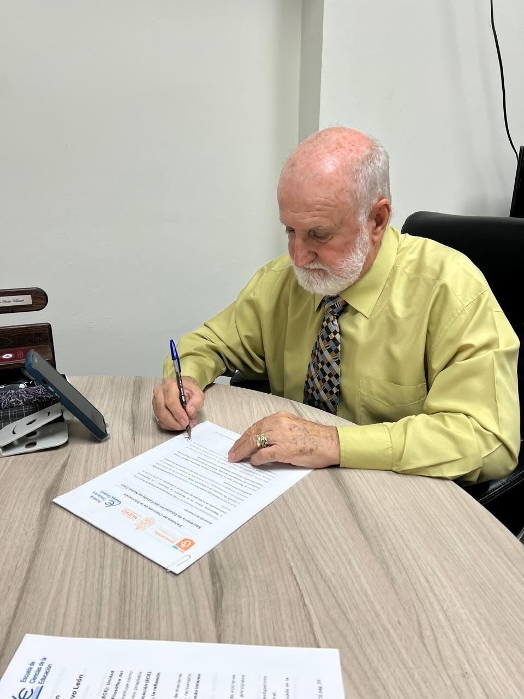
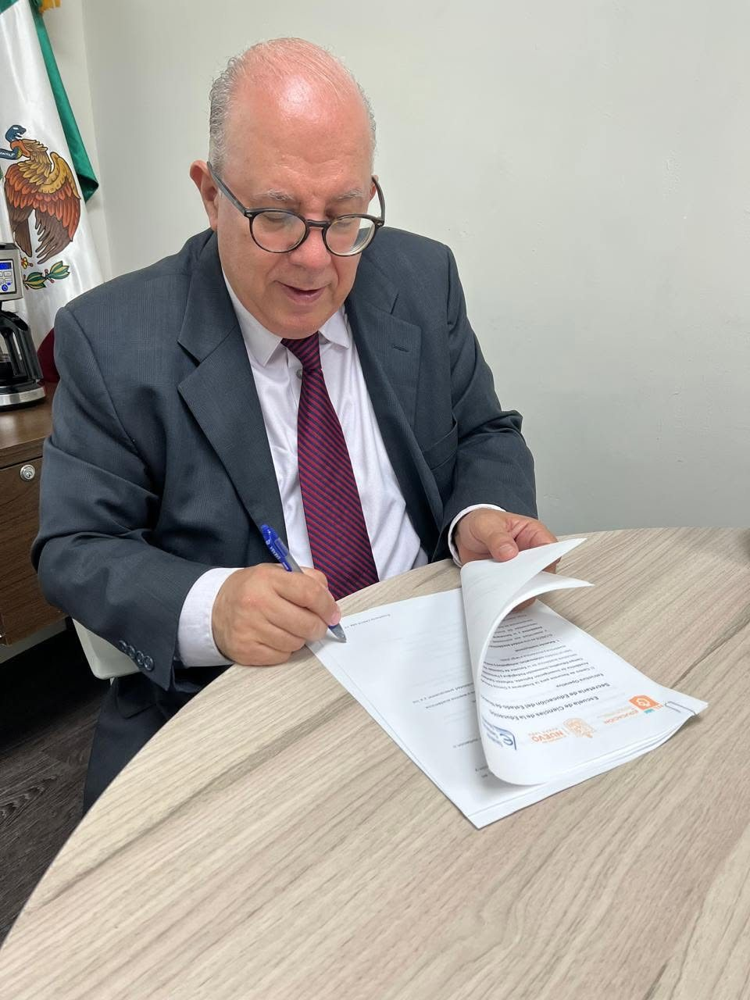

Documento fundacional
La ECE se fortalece con la creación del CRECE
El Centro de Recursos para la Enseñanza y Ciencia Educativa surge como un espacio para desarrollar proyectos educativos, promover la reflexión académica y producir recursos al servicio de la educación.
Su propósito es impulsar la colaboración docente, el intercambio de saberes y la creación de materiales y programas de formación que fortalezcan la práctica profesional y la mejora continua.
Respaldo institucionalLa firma contó con la participación de autoridades de la Escuela de Ciencias de la Educación y de la Coordinación General del CRECE.
CompromisoEl proyecto reafirma la formación docente, la innovación pedagógica y la educación al servicio de la sociedad.
Participaron el Dr. Alejandro Javier Treviño Villarreal, la Dra. María Dolores Montañez Almaguer, el Dr. Arnoldo Gerardo Leal Cordero y el Dr. José Alfredo Fernández González.






